품질경영산업기사 (2018-04-28 기출문제)
1과목: 실험계획법
1. 4종류의 다이어트 식단 A1, A2, A3, A4가 있다. 식이요법이 혈액응고 시간에 영향을 주는가를 알아보기 위하여 반복이 같지 않은 1요인실험을 실시한 결과 다음과 같은 데이터를 얻었다. 요인 A 의 제곱합(SA)은 약 얼마인가?
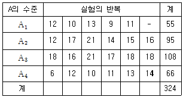
- 215
- 315
- 4564
- 4779
(정답률: 47%)

2. A, B, C 3요인 라틴방격법 분산분석의 해석에 관한 설명으로 틀린 것은?
- 이 실험은 교호작용 효과가 검출되지 않는다.
- 유의수준 5%로 요인 A, B, C 모두 유의하다면 점추정치
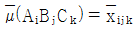
이다. - 유의수준 5%로 요인 A, B 가 유의하면 모평균의 신뢰구간 추정을 위한 유효반복수는
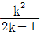
이다. - 유의수준 5%로 요인 A 가 유의하면 모평균의 신뢰구간 추정을 위한 오차항의 반복수는 k 즉, 그 요인의 수준 수와 같다.
(정답률: 38%)
3. 수준을 기술적으로 지정할 수 있고, 수준이 의미가 있는 경우의 구조모형은?
- 변량모형
- 모수모형
- 혼합모형
- 대응이 있는 변량모형
(정답률: 49%)
4. 난괴법에 관한 설명으로 맞는 것은?
- 두 요인 모두 변량요인이다.
- 결측치가 존재해도 쉽게 해석이 용이하다.
- 분산분석 과정은 반복이 없는 2요인실험과 동일하다.
- xij = μ + ai + bj + eij 인 데이터 구조식을 가지며, 여기서
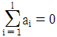
와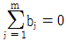
이다.
(정답률: 39%)
5. 1요인실험에서 SA ＝0.93, ST ＝1.68, vA ＝4, ve ＝60일 때, 오차의 순제곱합(Se')을 구하면 약 얼마인가?
- 0.70
- 0.75
- 0.80
- 0.85
(정답률: 33%)
6. 2수준계 직교배열표에 관한 설명으로 맞는 것은?
- 주효과와 교호작용의 자유도는 같다.
- 모든 효과는 직교대비로 표시할 수 없다.
- 요인의 주효과에 대한 자유도는 수준수와 같다.
- L4(23)형 직교배열표로는 최대 4개의 요인까지 배치할 수 있다.
(정답률: 29%)
7. 실험계획법에서 사용되는 모형을 요인의 종류에 따라 분류할 때 해당되지 않는 것은?
- 모수모형
- 변량모형
- 혼합모형
- 회귀모형
(정답률: 54%)
8. 요인 A, B가 모두 모수인 2요인실험을 2회 반복하여 실시하였다. A 의 자유도가 3이고, 교호작용의 자유도가 9인 경우, B 의 수준수는 얼마인가?
- 2
- 3
- 4
- 6
(정답률: 45%)
9. 요인 A 는 4수준이고, 요인 B 는 3수준인 반복이 없는 2요인실험에서 모평균 μ(AiBj) 추정에 필요한 유효반복수는 얼마인가?
- 2
- 2.4
- 2.6
- 3.2
(정답률: 44%)
10. 모수모형의 반복수가 같지 않은 1요인실험에서 각 수준의 모평균(μi)에 대한 100(1－α)% 신뢰구간 추정식으로 맞는 것은?
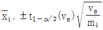
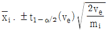
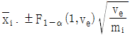
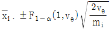
(정답률: 53%)
11. 모수모형의 반복이 없는 2요인실험의 F-검정에 관한 내용으로 틀린 것은?
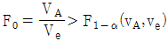
이면 요인 A 의 귀무가설을 기각한다.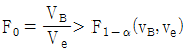
이면 요인 B 의 귀무가설을 기각한다.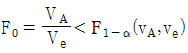
이면 요인 A 의 수준 간에 모평균차가 있는 것이 존재한다.- 요인 B 의 귀무가설은
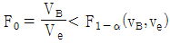
이면 위험률 α에서 유의적이다.
(정답률: 35%)
12. 반복이 같지 않은 모수모형의 1요인실험에 관한 데이터는 다음과 같다. 요인 A 의 제곱합(SA)은 약 얼마인가?
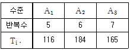
- 110.65
- 210.65
- 310.65
- 410.65
(정답률: 43%)
13. 1요인실험 계수치 데이터 xij 는 0 또는 1로 표현된다. 이때 총 제곱합을 구하는 방법으로 틀린 것은? (단, T 는 xij 의 합계이고, CT 는 수정항이다.)
- T-CT
- ∑∑xij-CT
- ∑∑xij2-CT
- ∑Tiㆍ2-CT
(정답률: 34%)
14. 수준수 l＝4, 반복수 m＝3인 1요인실험의 분산분석 결과 Ve ＝0.0465이었다. μ(Ai)와 μ(Ai') 의 평균치 차를 α＝0.⑤로 검정하고 싶다. μ(Ai)와 μ(Ai') 의 평균치 차의 절대값이 약 얼마이상일 때 유의적인가? (단, t0.975(8)＝2.306, t0.95(8)＝1.860이다.)
- 0.284
- 0.327
- 0.352
- 0.406
(정답률: 35%)
15. 단순회귀모형에서 결정계수를 구하기 위하여 Sxx ＝87, Sxy ＝131, Syy ＝395를 얻었다. 결정계수(r2)의 값은 약 얼마인가?
- 0.5
- 0.6
- 0.7
- 0.8
(정답률: 43%)
16. k × k 라틴방격법에서 오차의 자유도는?
- k-1
- (k-1)(k-2)
- (k-1)(k-3)
- (k-1)(k-4)
(정답률: 57%)
17. 2요인실험에서 AiBj의 조합의 모평균(μij)의 추정치와 신뢰한계는
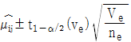
이다. 여기서 유효반복수(ne)를 설명한 것은?- 총 실험횟수/(유의한 요인의 수+1)
- 1/유의한 요인의 추정식의 합
- 총 실험횟수/(유의한 요인의 수준수의 합+1)
- 총 실험횟수/(유의한 요인의 자유도의 합+1)
(정답률: 47%)
18. 2수준 직교배열표에서 요인 A 가 기본표시 ab에, 요인 B 가 기본표시 bc에 배치되었다면 A × B 의 기본표시는?
- ab
- ac
- bc
- abc
(정답률: 57%)
19. 1요인실험에서 변량모형에 대한 설명으로 틀린 것은?
- 데이터의 구조식은 xij = μ+ai+eij이다.
- 변량요인의 각 수준에서의 모평균의 추정은 의미가 없다.
- 요인의 수준이 랜덤으로 선택될 때 그 요인은 변량요인이 된다.
- 요인의 수준을 랜덤하게 선택하므로 산포의 추정은 의미가 없다.
(정답률: 42%)
20. 결측치의 처리방법으로 틀린 것은?
- 1요인실험인 경우에는 결측치를 무시하고 그대로 분석한다.
- 반복 없는 2요인실험인 경우에는 결측치를 Yates 방법으로 추정하여 대체시킨다.
- 1요인실험인 경우에는 결측치가 들어있는 수준의 평균치로 결측치를 추정하여 대체시킨다.
- 반복있는 2요인실험인 경우에는 결측치가 들어있는 조합에서 나머지 데이터들의 평균치로 결측치를 추정하여 대체시킨다.
(정답률: 31%)
2과목: 통계적품질관리
21. 부분군의 크기 5, 부분군의 수 25에 대하여 다음의 데이터를 얻었다.
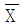
관리도의 UCL은 약 얼마인가? (단, n＝4일 때, d2＝2.06, n＝5일 때 d2＝2.33이다.)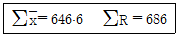
- 8.199
- 10.064
- 41.664
- 43.529
(정답률: 45%)
22. 서로 독립인 확률변수 X, Y 가 각각 정규분포 N(20, 2)과 N(27, 1)을 따를 때, V(5X-7Y+15)의 값은 얼마인가?
- 51
- 99
- 149
- 164
(정답률: 30%)
23. 모분산의 신뢰구간 추정에 관한 설명으로 틀린 것은?
- 신뢰구간 계산은 카이제곱분포를 이용한다.
- 모분산의 신뢰구간은 분산이 크면 음수로 나타난다.
- 신뢰구간의 추정은 검정 결과가 유의할 경우에만 의미가 있다.
- 신뢰구간의 추정 시 사용되는 자유도는 시료의 크기에서 1을 뺀 값이다.
(정답률: 50%)
24. x0.952(15)＝25이면, F0.95(15, ∞)의 값은 약 얼마인가?
- 0.357
- 1.667
- 1.786
- 2.236
(정답률: 43%)
25. 어떤 A 공장에서 제품을 조사한 결과 평균 무게는 40g이고, 이 제품의 표준편차는 6g 일 때 변동계수(CV)는 얼마인가?
- 5.5%
- 10.5%
- 15.0%
- 20.0%
(정답률: 53%)
26. 일산화탄소의 농도(x)와 벤조피렌의 농도(y)와의 관계를 분석한 결과 S(xy)＝94.79, S(xx)＝111.71, S(yy)＝85.85였다. 시료의 상관계수는 약 얼마인가?
- 0.8343
- 0.8678
- 0.9234
- 0.9679
(정답률: 41%)
27. 계량 샘플링검사와 계수 샘플링검사를 비교한 것 중 틀린 것은?
- 검사기록의 이용도는 계량 샘플링검사가 더 높다.
- 계수 샘플링검사가 일반적으로 검사에 숙련을 더 요한다.
- 계량 샘플링검사는 특히 값비싼 물품의 파괴검사에 유리하다.
- 검사설비 및 기록에 있어서는 계수 샘플링검사가 더 간단하다.
(정답률: 47%)
28. 통계적 가설검정에 대한 설명으로 맞는 것은?
- 채택역과 기각역은 서로 관계가 없다.
- 채택역이 커질수록 제1종 오류는 증가한다.
- 기각역이 작을수록 제1종 오류는 감소한다.
- 기각역이 커질수록 제2종 오류는 증가한다.
(정답률: 40%)
29. Y 사는 부분군의 크기가 4인  관리도의 관리상한 42.5, 관리하한 17.5로 하여 공정을 모니터링하고 있다. 만약 공정의 분포가 N(30, 102)으로 변하였다면 이 관리도에서
관리도의 관리상한 42.5, 관리하한 17.5로 하여 공정을 모니터링하고 있다. 만약 공정의 분포가 N(30, 102)으로 변하였다면 이 관리도에서  가 관리한계를 벗어날 확률은 약 몇 %인가? (단, 다음의 정규분포표를 이용하여 구한다.)
가 관리한계를 벗어날 확률은 약 몇 %인가? (단, 다음의 정규분포표를 이용하여 구한다.)
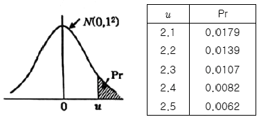
- 1.24%
- 1.64%
- 2.14%
- 2.78%
(정답률: 43%)
30. 일정한 길이 또는 일정 면적 당 부적합수를 관리하기 위해 사용하는 관리도를 부적합수 관리도라고 하며, c관리도와 u관리도가 있다. c관리도와 u관리도에서는 각각 부적합수가 어떤 확률분포를 따른다고 가정하는가?
- 푸아송분포, 이항분포
- 푸아송분포, 정규분포
- 푸아송분포, 감마분포
- 푸아송분포, 푸아송분포
(정답률: 41%)
31. OC 곡선에서 소비자 위험(β)을 가능한 한 크게 하기 위한 방법으로 가장 적절한 것은?
- 샘플의 크기와 합격판정개수를 모두 증가시킨다.
- 샘플의 크기와 합격판정개수를 모두 감소시킨다.
- 샘플의 크기는 증가시키고, 합격판정개수는 감소시킨다.
- 샘플의 크기는 감소시키고, 합격판정개수는 증가시킨다.
(정답률: 50%)
32. 로트의 표준편차 σ기지의 계량 규준형 1회 샘플링 검사에서 평균치를 보증하는 경우 n＝16, Kα＝1.645라면 G0 의 값은 약 얼마인가? (단, 위험률 α＝0.⑤이다.)
- 0.10
- 0.41
- 0.82
- 1.65
(정답률: 41%)
33. 기준값이 주어져 있는 경우의 R 관리도와 관련된 식으로 틀린 것은?
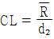
- LCL = D1σ0
- CL = d2σ0
- UCL = D2σ0
(정답률: 29%)
34. B 공정의 로트 3000개 중에서 100개를 랜덤샘플링하였더니 부적합품이 7개로 나타났다. 신뢰율 95%로 모부적합품률의 양쪽 신뢰구간을 계산하면 약 얼마인가?
- 0.004~0.136
- 0.020~0.120
- 0.⑤0~0.095
- 0.060~0.180
(정답률: 34%)
35. 계통 샘플링 검사에서 로트의 크기가 N 이고 시료의 크기가 n일 때 샘플링 간격을 구하는 식은?
- n
- n/N
- N/n
- n/2N
(정답률: 40%)
36. 전선 100m당 부적합수를 관리하기 위해 25회를 검사하였더니 총부적합수가 25개이었다. c관리도의 LCL 과 UCL 은 각각 얼마인가?
- LCL ＝1, UCL ＝1.95
- LCL ＝1, UCL ＝4
- LCL ＝고려하지 않는다. UCL ＝1.95
- LCL ＝고려하지 않는다. UCL ＝4
(정답률: 40%)
37. AQL은 0.40(부적합품, 퍼센트), 샘플문자는 G로 한다. 샘플크기 n＝32, Ac＝0일 때, 부적합품률이 AQL인 로트의 합격확률(%)은 약 얼마인가?
- 77.2%
- 82.0%
- 87.2%
- 91.0%
(정답률: 39%)
38. 모표준편차 σ 를 알고 있으면서 모평균(μ)의 신뢰구간을 추정할 경우 시료의 크기가 커지게 되면 신뢰구간의 폭은?
- 좁아진다.
- 관계없다.
- 넓어진다.
- 알 수 없다.
(정답률: 47%)
39. X 가 다음과 같은 이산 확률분포를 갖는다고 할 때 확률변수 X 의 평균과 분산은?
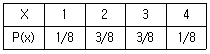
- 평균：2.5, 분산：0.75
- 평균：3.5, 분산：0.95
- 평균：4.5, 분산：0.98
- 평균：5.5, 분산：0.87
(정답률: 43%)
40.  관리도에서 관리한계를 벗어나는 점이 많아질 때의 설명으로 맞는 것은? (단, R 관리도는 안정되어 있으며, 군내변동 : σω2, 군간변동 : σb2이다.)
관리도에서 관리한계를 벗어나는 점이 많아질 때의 설명으로 맞는 것은? (단, R 관리도는 안정되어 있으며, 군내변동 : σω2, 군간변동 : σb2이다.)
- σb2 가 크게 되었다는 뜻이다.
- σb2 가 작게 되었다는 뜻이다.
- σω2 가 크게 되었다는 뜻이다.
- σω2 가 작게 되었다는 뜻이다.
(정답률: 45%)
3과목: 생산시스템
41. 설비를 보전하는 오퍼레이터로서 요구되는 능력과 가장 거리가 먼 것은?
- 설비의 결함을 발견할 수 있고, 개선할 수 있는 능력
- 설비의 기능을 이해하고, 이상원인을 발견할 수 있는 능력
- 설비와 품질의 관계를 이해하고, 품질이상의 예지와 원인을 발견할 수 있는 능력
- 설비의 정밀도 향상을 위해 설비를 고성능화 할 수 있는 구조를 발견하여 설비를 개량하는 능력
(정답률: 56%)
42. 세 개의 작업 A, B, C는 기계 1과 기계 2를 연속으로 거치며 가공이 이루어진다. Johnson의 방법을 이용하여 총 작업시간을 최소화하는 작업순서를 구한 것은?
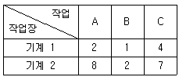
- A → B → C
- A → C → B
- C → A → B
- B → A → C
(정답률: 54%)
43. 주유소의 2018년 2월 판매예측치는 230000리터, 실제 판매량은 215000리터였다. 이 주유소의 3월 판매예측치르 평활상수 α＝0.25인 단순지수평활법으로 구하면 얼마인가?
- 218750원
- 222500원
- 226250원
- 233750원
(정답률: 40%)
44. 생산계획량을 완성하는데 필요한 인원이나 기계의 부하를 결정하여 이를 인원 및 기계의 능력과 비교하여 조정하는 계획은?
- 생산일정계획
- 능력소요계획
- 최종일정계획
- 자재소요계획
(정답률: 41%)
45. 재료가 출고되어서부터 제품으로 출하되기까지의 공정 계열을 체계적으로 도표를 작성하여 분석하는 방법은?
- 작업분석
- 공정분석
- 동작분석
- 서블릭분석
(정답률: 60%)
46. MRP 시스템에서 로트 사이즈를 경정하는 방법이 아닌 것은?
- MAPI 방법
- 최소총비용(LTC) 방법
- 최소단위비용(LUC) 방법
- 와그너-위틴(Wagner-Whitin) 방법
(정답률: 49%)
47. 다음 계획공정도표에서 단계 3의 가장 빠른 작업 시간(TE) 및 가장 늦은 작업 시간(TL)은 각각 얼마인가?
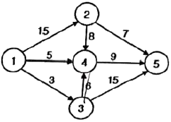
- TE＝0, TL＝16
- TE＝0, TL＝17
- TE＝3, TL＝17
- TE＝3, TL＝18
(정답률: 44%)
48. 정기발주방식에 의해 재고시스템을 운영하기 위하여 결정해야 할 두 매개 변수는 무엇인가?
- 발주량과 재주문점
- 리드타임과 발주주기
- 최대재고수준과 재주문점
- 최대재고수준과 발주주기
(정답률: 41%)
49. 포드(Ford) 시스템의 특징과 가장 거리가 먼 것은?
- 과업관리
- 생산의 표준화
- 이동조립법
- 컨베이어 시스템
(정답률: 61%)
50. 어느 작업의 관측평균시간이 1.0분, 레이팅계수가 120%이다. 이 작업의 여유시간을 정미시간의 10%로 정할 때, 표준시간은?
- 1.20분
- 1.27분
- 1.32분
- 1.45분
(정답률: 53%)
51. 자재명세서(BOM)에 대한 설명으로 틀린 것은?
- 최종품목은 각각 개별 자재명세서를 가지는데 그 목록은 계층적이다.
- 최종제품의 수량과 일정에 대한 총괄적인 종합계획이다.
- 제품구조를 명확하게 나타내기 위해 제품구조도를 작성한다.
- 최종제품 한 단위 생산에 소요되는 구성품목의 종류와 수량을 명시하고 있다.
(정답률: 35%)
52. 다음 표에서 MRP와 JIT 시스템의 차이를 잘못 설명한 것은?
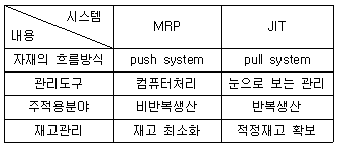
- 자재의 흐름방식
- 관리도구
- 주적용분야
- 재고관리
(정답률: 56%)
53. PTS(Predetermined Time Standards)법의 특징으로 가장 거리가 먼 것은?
- 원가의 견적을 보다 정확하게 할 수 있다.
- 작업자에게 최적의 작업방법을 훈련할 수 있다.
- 경험으로 시간을 견적하므로 생산현실을 반영할 수 있다.
- 흐름작업에 있어서 라인밸런싱을 보다 높은 수준으로 끌어 올릴 수 있다.
(정답률: 35%)
54. 작업의 동작을 분해 가능한 최소한의 단위로 분석하여 비능률적인 동작을 줄이거나 배제시켜 최선의 작업방법을 추구하는 연구방법은?
- 동작분석
- 공정분석
- 제품분석
- 다중활동분석
(정답률: 70%)
55. 생산 및 조립작업에 있어서 공정별 작업량이 각각 다를 때, 가장 큰 작업량을 가진 공정을 무엇이라고 하는가?
- 주공정
- 애로공정
- 대공정
- 목표공정
(정답률: 49%)
56. 석유, 플라스틱, 제철, 알루미늄, 제지공업에서 볼 수 있는 생산공정으로 배치생산 또는 연속생산으로 제품으로 생산하는 것은?
- 화학공정
- 성형공정
- 조립공정
- 운반공정
(정답률: 53%)
57. 라인능률(혹은 편성효율)을 구하기 위해 필요한 사항이 아닌 것은?
- 사이클 타임
- 실제작업장 수
- 라인에서 재고수
- 라인의 각 작업요소시간의 합계
(정답률: 62%)
58. 작업자-복수기계작업 분석표(man-multi machine chart)에서 한 작업자가 담당해야 할 이론적인 기계대수(n)를 구하는 식으로 가장 적합한 것은? (단, a는 작업자와 기계의 동시 작업시간, b 는 기계와 독립적인 작업자 작업시간, t는 기계가공시간(기계 고유의 가공시간) 이다.)
- n = (a+b)/(a+t)
- n = (a+t)/(a+b)
- n = a/(b+t)
- n = b/(a+t)
(정답률: 45%)
59. 절차계획에서 결정된 공정절차표와 일정계획에서 수립된 일정표에 따라서 계획과 실제의 생산활동을 연결시키고, 실제의 생산활동을 개시하도록 허가하는 것은?
- 능력계획
- 여력관리
- 일정계획
- 작업배정
(정답률: 43%)
60. 설비로스 중 기능 돌발형 고장 또는 기능 저하형 고장으로 인한 손실로 시간가동률을 저해하는 것은?
- 고장로스
- 공구교환로스
- 작업준비ㆍ조정로스
- 불량ㆍ수정로스
(정답률: 60%)
4과목: 품질경영
61. 어떤 품질특성의 규격은 12.0±1.5이다. 평균이 11.5, 표준편차가 0.5라고 할 때, 최소 공정능력지수(Cpk)는 얼마인가?
- 0.67
- 1.00
- 1.33
- 1.67
(정답률: 27%)
62. 제조공정에 관한 사내표준의 요건으로 틀린 것은?
- 실행 가능한 내용일 것
- 직관적으로 보기 쉬운 표현을 할 것
- 장기적인 방침 및 체계하에서 추진할 것
- 공정변화에 대해 기여비율이 작은 것부터 추진할 것
(정답률: 68%)
63. 품질보증의 주요 기능 중에서 가장 처음에 실시해야 할 내용은?
- 설계품질의 확보
- 품질정보의 수집, 해석
- 품질조사와 클레임 처리
- 품질방침의 설정과 전개
(정답률: 53%)
64. 품질경영시스템-기본사항 및 용어(KS Q ISO 9000：2015)에서 규정하고 있는 고객(customer)의 범주에 속하는 개인 또는 조직으로 틀린 것은?
- 소비자
- 최종 사용자
- 유통업자
- 제품 구매자
(정답률: 73%)
65. 온도와 수량과의 관계, 비중과 농도의 관계 등 두 개의 데이터의 관계를 그림으로 나타내어 개선하여야 할 특성과 그 요인과의 관계를 파악하고 조사할 목적으로 사용되는 수법은?
- 관리도
- 히스토그램
- 산점도
- 파레토그램
(정답률: 38%)
66. 6시그마 추진을 위한 자격제도에 있어 6시그마 프로젝트 추진을 담당하는 전담요원을 지칭하는 자격은?
- 블랙벨트(Black Belt)
- 그린벨트(Green Belt)
- 화이트벨트(White Belt)
- 마스터블랙벨트(Master Black Belt)
(정답률: 60%)
67. 표준화의 목적이 아닌 것은?
- 보호무역의 추진
- 기능과 치수의 호환성
- 안전·건강 및 생명의 보호
- 소비자 및 공동사회의 이익보호
(정답률: 53%)
68. 품질경영시스템-요구사항(KS Q ISO 9000：2015)에 의한 경영검토 중 경영검토 입력사항이 아닌 것은?
- 부적합 및 시정조치
- 품질경영시스템 변경에 대한 모든 필요성
- 고객만족 및 관련 이해관계자로부터의 피드백
- 프로세스 성과, 그리고 제품 및 서비스의 적합성
(정답률: 31%)
69. KS인증심사기준(제품분야)에서 일반심사기준 중 사내표준화 및 품질경영의 추진 심사기준의 내용으로 틀린 것은?
- 경영책임자는 표준화 및 품질경영을 합리적으로 추진해야 한다.
- 품질경영의 추진계획은 해당 한국산업표준(KS) 및 인증심사기준의 요구 수준 이상으로 보증할 수 있도록 입안해야 한다.
- 기업의 사내표준 및 관리규정은 한국산업표준(KS)을 기반으로 회사 규모에 따라 적합하게 수립하고 회사 전체 차원에서 적용해야 한다.
- 제안 활동 또는 소집단 활동 등을 통해 품질개선 활동을 실시하고, 사내표준화와 품질경영 활동 전반에 대해 자체점검을 2년 이내의 주기로 실시하여 그 결과를 경영에 반영해야 한다.
(정답률: 49%)
70. 표준의 서식과 작성방법(KS A 0001：2015)에서 한정, 접속 등에 사용하는 용어에 대한 설명이 틀린 것은?
- “시”는 시기 또는 시각을 명확히 할 필요가 있는 경우에 사용한다.
- “부터”와 “까지”는 각각 때, 장소 등의 기점 및 종점을 나타내는 데 사용한다.
- “혹은”은 선택적 의미로 “또는”을 사용하여 병렬한 어구를 다시 선택의 의미로 나눌 때 사용한다.
- 문장의 처음에 접속사로 놓는 “다만”은 주로 본문 안에서 보충적 사항을 기재하는 데 사용한다.
(정답률: 56%)
71. D.A. Garvin이 제시한 품질을 이루고 있는 8가지 요소에 해당되지 않는 것은?
- 미관성(aesthetics)
- 특징(feature)
- 성능(performance)
- 공감성(empathy)
(정답률: 43%)
72. 공정개선이 필요한 경우가 아닌 것은?
- 정해진 표준대로 작업할 수 없어서 결과가 목표치에 미달될 경우
- 해당 공정작업자의 작업표준 미준수로 설비 이상이 자주 발생되는 경우
- 시장 또는 고객요구 변화에 따라 더욱 높은 수준의 공정을 필요로 하는 경우
- 정해진 표준대로 작업해도 얻어진 결과가 목표에 미달되어 개선이 필요한 경우
(정답률: 59%)
73. 품질비용 중 예방비용에 해당되는 것은?
- 재가공 작업비용
- 클레임 처리비용
- 품질관리 교육비용
- 계측기 검·교정 비용
(정답률: 61%)
74. 품질관리수법 중 신 QC 7가지 도구에 해당되지 않는 것은?
- 계통도법
- 산점도법
- 연관도법
- 매트릭스도법
(정답률: 56%)
75. 품질모티베이션 활동인 ZD, 품질분임조 활동 등이 갖는 공통점은?
- 소집단 활동이다.
- 강제적인 조직이다.
- 경직된 가치관을 갖는다.
- 문제점 발견과 거리가 멀다.
(정답률: 69%)
76. 제품개발 단계에서 발생하는 기획품질, 설계품질, 공정품질의 확보를 통해, 후 공정의 시행착오를 최소화하고, 제품 신뢰성 확보를 위한 사전 문제점 발굴 및 대책을 신속·명확히 진행하기 위한 활동은?
- 관리도
- 샘플링 검사
- DR(Design Review)
- CTQ(Critical to Quality)
(정답률: 38%)
77. 일본의 카노(Kano) 교수는 고객만족모델에서 품질요소를 3가지로 분류하였다. 이에 대한 설명으로 틀린 것은?
- 묵시적 품질은 충족이 되든 충족이 되지 않든 불만을 야기하지 않는 것이다.
- 일원적 품질은 충족이 되면 만족하며, 충족이 되지 않으면 불만을 야기하는 것이다.
- 매력적 품질은 충족이 되면 매우 만족하며, 충족이 되지 않더라도 문제가 없는 것이다.
- 당연적 품질은 충족이 되면 별다른 만족을 주지 않지만 충족이 되지 않으면 불만을 야기 하는 것이다.
(정답률: 52%)
78. 측정시스템 분석에서 %R&R의 값에 의해 게이지 가격, 수리비용, 적용의 중요성에 따라 수용은 가능하나, 신뢰도 향상활동이 요구됨으로 결과가 나왔다. 이때의 %R&R의 값의 정도는 얼마인가?
- 10% 이하
- 10~30%
- 30~50%
- 50% 이상
(정답률: 51%)
79. 다음은 어떤 제도의 목적을 설명한 내용인가?
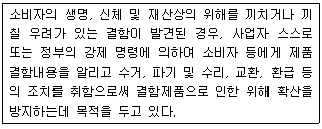
- 환급제도
- 리콜제도
- 제품교환제도
- 공산품품질관리제도
(정답률: 72%)
80. 어떤 조립품은 3개 부품의 결합으로 조립된다. 이들 중 2개의 부품은 규정공차가 각각 ±0.010이고, 다른 1개 부품의 규정공차는 ±0.0⑤이다. 조립품의 규정공차는 얼마인가?
- ±0.0110
- ±0.0112
- ±0.0150
- ±0.0250
(정답률: 56%)
주어진 데이터를 이용하여 요인 A의 제곱합(SA)을 구하면 다음과 같다.
SA = ((10+12+8+6)/4)2 - ((22+16)/2)2 - ((14+10)/2)2 - ((18+12)/2)2
= (9)2 - (19)2 - (12)2 - (15)2
= 81 - 361 - 144 - 225
= -649
따라서 요인 A의 제곱합(SA)은 215이 아닌 -649이다.
정답이 "215"인 이유는 계산 실수일 가능성이 있으며, 혹은 다른 문제에서 나온 값일 수도 있다.